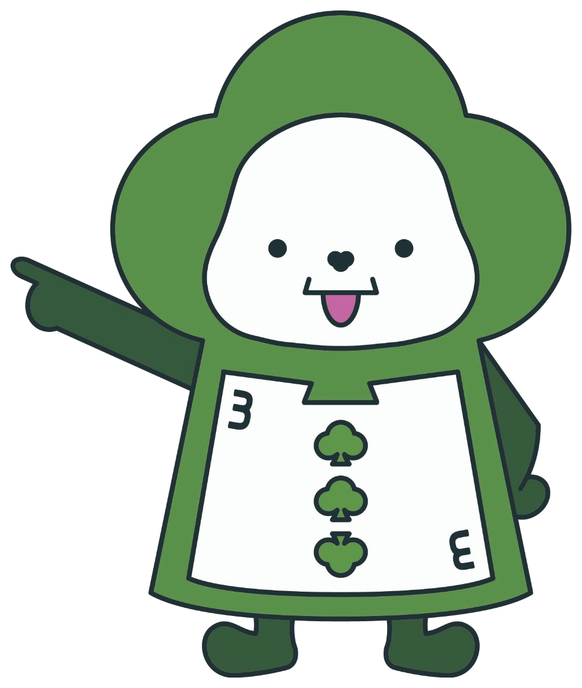
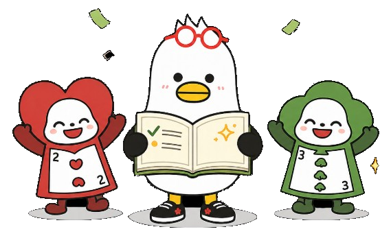

현장에서 낱말을 찾아
글자 조각을 순서대로 눌러 보세요!
글자 조각을 순서대로 눌러 보세요!
1층
어린이실 입구
제4회 창의융합 보드게임 대축제
부기가 만든 도서관 탐험책에서
중요한 낱말 네 개가 사라졌어요!
두리, 서이와 함께 낱말을 찾아주세요.
1층에서 세 낱말을 찾고,
3층에서 마지막 낱말을 찾아요!
보호자와 함께 계단이나 엘리베이터를 이용해요.

서이 도서관에서는 뛰지 않고 천천히 이동해요!
1층
어린이실 입구
네 개의 낱말을 모두 되찾았어요.

내 탐험책을 완성해 줘서 정말 고마워!